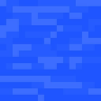
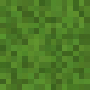
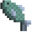

I / Présentation du jeu :
Le principe de Save The Fish est d'amener le poisson de son lac jusqu'à la mer pour rejoindre ses semblables. A l'aide de la souris vous devrez suivre la rivière, sans passer sur l'herbe, pour rejoindre l'océan.
II / Principaux éléments :

: Rivière

: Herbe

: Poisson
III / Conseils
La rivière est tortueuse et semmée d'embûches, prennez garde aux courants qui pourraient vous surprendre.
Avant que le jeu commence vous avez deux secondes, après il n'y a plus moyen de revenir en arrière, vous serez lancé dans le grand bain.
Sortir de la fenetre du jeu, vous fera automatiquement recommencer au début.
Les poissons n'aiment pas les fleurs, ça ne sert à rien d'aller en cueillir sur le bord de la rivière.